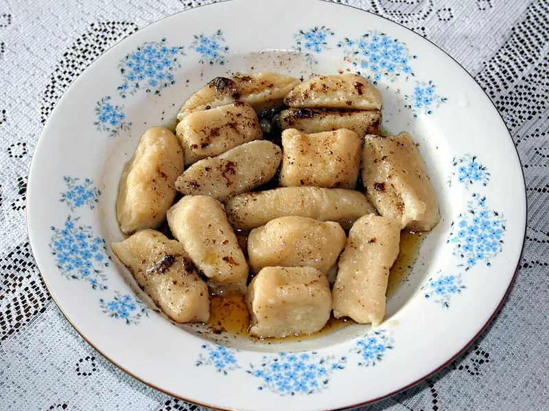

Фото: Przykuta, CC BY-SA 3.0

Ленивые вареники
Творожные клёцки со сметаной, которые лепятся за 10 минут
30 мин3 порц.365 ккал на порциюБ 29 · Ж 13 · У 33Украинская кухня
Продукты на 3 порц.
- Творог 5%400 г
- Яйцо куриное1 шт
- Мука пшеничная0,7 стак.
- Сахар1 ст. л.
- Соль1 щеп.
- Вода2000 мл
- Сливочное масло15 г
- Сметана 20% по желанию3 ст. л.
Как готовить
- Разомните творог с яйцом, сахаром и солью вилкой до однородности.
- Всыпьте муку и замесите мягкое тесто, слегка липнущее к рукам. Лишнюю муку не добавляйте.
- Разделите тесто на 3 части, скатайте колбаски толщиной 2 см на подпылённом столе и нарежьте кусочками по 1,5 см.
- Вскипятите воду, слегка посолите и опустите вареники, помешивая, чтобы не слиплись.
- После всплытия варите 2 минуты на среднем огне и выловите шумовкой.
- Полейте растопленным сливочным маслом и подавайте со сметаной.
Совет. Сырые вареники можно заморозить на доске и хранить до месяца, варить сразу из морозилки на 2 минуты дольше. Влажный творог отожмите через марлю, иначе уйдёт много муки.